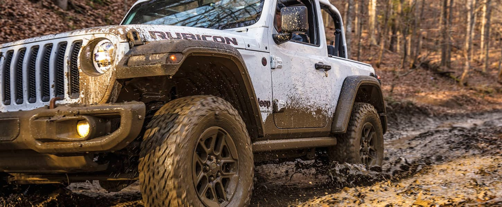
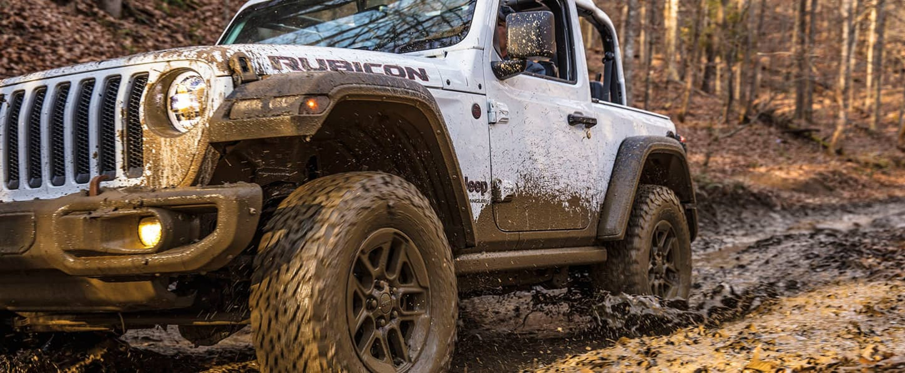

It gives you impressive control and More Torque Than Any Other Wrangler Generation for unbeatable off-road performance.
With a high air intake, sealed electrical connections and moisture-resistant body openings, you can cross creeks, streams and puddles with ease.
Easily maneuver tight, treacherous trails or navigate around rocks or fallen logs with precision steering systems and high-performance wheelbases.
Good suspension and axle articulation help keep your wheels on the ground, allowing for maximum traction while going over obstacles.
Drive over logs, rocks or just about anything else on the trail, thanks to exceptional ground clearance and protective underbody skid plates.
The Wrangler delivers power and efficiency thanks to a choice of four available engines, one of which is equipped with the eTorque Mild Hybrid System for optimal low-end torque. It’s our Most Powerful Wrangler Generation Ever.


Eighty years of Jeep® Brand off-road evolution are rolled into the Wrangler. No matter what adventure you set out on, a variety of standard and available 4x4 systems are there to deliver impressive traction to get you where you want to go.
The part-time Command-Trac® 4x4 system delivers torque to all wheels for incredible traction when all four are required. And with a 2.72:1 low range for rock crawling and neutral for available flat towing , you can say yes to all kinds of adventure.
The Wrangler Rubicon offers legendary off-road capability thanks to advanced traction systems, Tru-Lok® Electronic Locking Differentials and the Electronic Front Sway Bar Disconnect.
The Rubicon gets ample ground clearance thanks to 33-inch all-terrain tires. They offer a larger surface area than regular tires for maximum traction and control on the off-road.
Rock rails help protect door sills from damaging debris, while winch-capable steel bumpers have removable endcaps so you can push the limits with radical off-road adventures.
With a 4:1 low-gear ratio, the Rock-Trac®-equipped Rubicon can deliver an 84:1 crawl ratio when equipped with the manual transmission to crawl over obstacles.
When the dashboard-mounted sway bar switch is pushed, the Electronic Sway Bar Disconnect system remotely disconnects your sway bar so the front wheels can drop and compress, improving suspension articulation on tough terrain.
Power can be misapplied when rock crawling, causing the wrong wheels to spin. Front and rear Tru-Lok® electronic locking differentials lock and evenly distribute power for impressive traction.